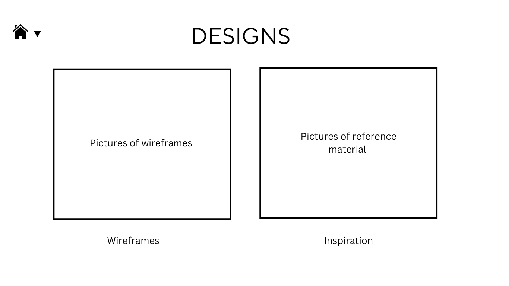

Homepage Wireframe: I want the entire site to be linked through the home page. The homepage itself wont have a
lot of information. It's
main function will be navigation
Blogs Wireframe: This format should be on all pages. I want the consistency to help users understand the
navigation of the site
Websites that are inspirational
Internet Archive: The Internet Archive, the internet archive
from a UI design perspective,
has the look and a feel of library. This is inspirational because I want my website to embody a place, I just
haven't figured out what type of place.
Deon Hinton Portfolio: Deon Hinton Portfolio, Deon
Hinton, is one my favourite working photographers today and with his portfolio,
much like the Internet Archive, Deon's portfolio has the look of an art gallery. Its artistic and peaceful.
Homepage wireframes
New Homepage wireframe: With this wireframe I am starting to develop the potential visual structure of my site and how that could be achieved.
I wanted to achieve a clean look and something thats easy to navigate for users. For now Im not too interested in visuals but in the long run I do want my
website to reflect a place or at least a feeling. However I do believe the foundation for my concept for this website needs to be an effective and easy website to go in and around.
Design wireframe

Design Wireframe: I am struggling with creating consistency between pages while trying to achieve a "clean" look. It results in a lot of pages looking bare in terms of information.
And the information that could be added in this would be overwhelming for viewers of the site. The information would need its own section and thats why it didn't make it. This wireframe more so shows
the design files homepage, where viewers of the site viewers
Folder structure
In terms of folder structure: I'm aiming for an easy to navigate website and folder structure